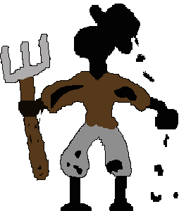
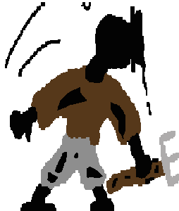
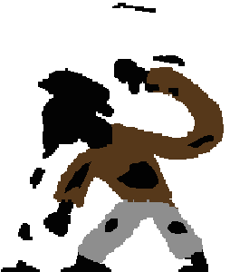

This is all of my art conceptual or final.
This is a concept of a cultist that I was going to make into a game, the idea is still in the air as I'm not entirely sure if I'm going to do it this year or not but if I do then this would be in the moodboard or conecept sketches.

From my game, Plague and The 7 Syringes, I made a few enemies for the player to encounter on their journey
through hell. One of these enemies is the Ink Farmer, as someone who used to farm the ink from the puddles and
ponds now he spends his days serving Ekkidno the Ink Knight. These are a few images of his animation cycle.


